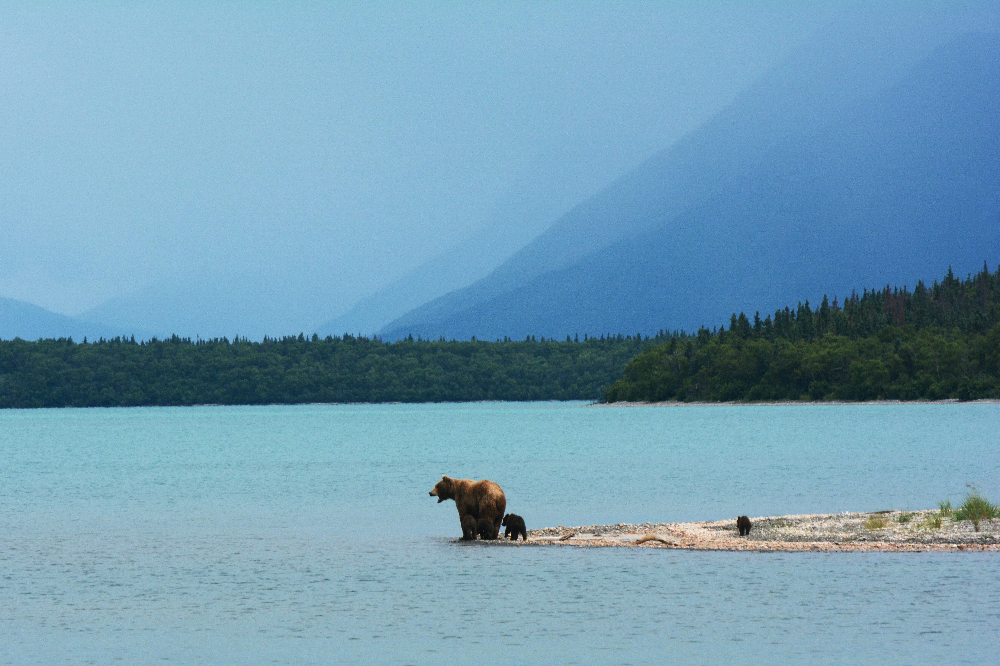

Bears

Another main reason I want to visit Alaska is to see all the wildlife. Now, when I say that, I don't
mean I want to be super up close and personal with it, but I would love to see it. You just don't really
see the type of animals you can find in Alaska, in a place a Nebraska.
Otters

Along with the bears, you have these CUTE little otters that are just playing in the water!
This is another example of the type of wildlife I would love to see in Alaska. I'm sure there
are tons more to see that I havne't even thought about.